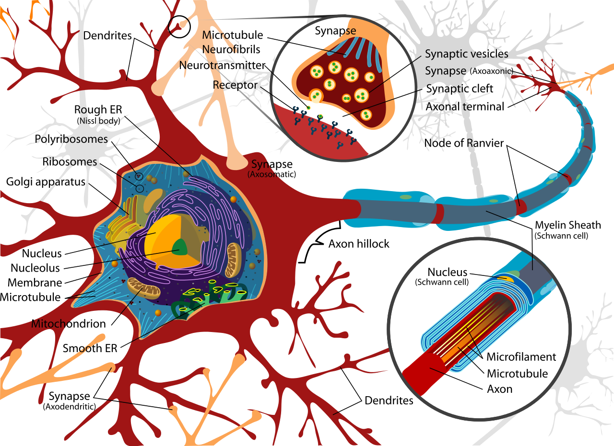

Perceptron
Modelos
- McCulloch and Pitts (1943)- Hebb (1949)
- Rosenblatt (1958)
Neurona
Modelos
Problema
Dado un conjunto de inputs $x(i)$ y una salida (output) $d(i)$ de un sistema dinamico desconocido, desarollar un sistema que, dado las entradas $x(i)$ producir una salida $y(i)$ tal que $y(i)$ sea lo mas similar posible a $d(i)$.Mis Actores hasta ahora
- $i$: un dado momento en el tiempo- $m$: la dimensionalidad de las entradas
- $x(i)$: un vector de dimension $m$ representando las entradas en el tiempo $i$ (inputs)
- $d(i)$: un número real representando la salida del sistema desconocido en el tiempo $i$ (output)
- $y(i)$: un número real representando la salida del sistema a simular el desconocido en el tiempo $i$ (prevision)
Menos sobre problema, mas sobre perceptrons
Para transformar $x(i)$, una entrada $m$-dimensional en una salida $y(i)$, escalar, la neurona necesita algunos factores internos. La neurona mas sensilla tiene:$w(i)$: un vector $m$-dimensional con los pesos para el vector $x(i)$

Una Notación
Antes de seguir, llamaremos de $x_n(i)$ el $n$-esimo elemento ($ 1 \leq n \leq m$) elemento de $x(i)$.Analogamente, lo haremos para $w(i)$ y otros vectores.
Flujo de Sinales
Podemos dividir el Flujo de sinales en nuestro perceptron en dos procesos:
-Filtración: entra $x(i)$ y sale $y(i)$-Adaptación: entra $d(i)$, $y(i)$ y $w(i)$ y el perceptron adapta su $w(i+1)$
Y como llego al $y(i)$ ?
$y(i)=x^T(i)w(i)$
$y(i)=\sum_{k=1}^m w_k(i)x_k(i)$
Y como llego al $w(i+1)$ ?
Bueno... Esta es una pregunta mucho mas compleja... Pero vamos empezar por el início, definindo el error
$e(i)=d(i)-y(i)$
Funcción Costo
Vamos empezar a definir una función llamada Costo: $\epsilon(w)$
Definamos ahora un vector peso $w*$ como óptimo.
La funcción $\epsilon$ esta definida de tal manera que: $\epsilon(w*) \leq \epsilon(w)$
Condicción de Optimalidad
$\nabla \epsilon(w*)=0$
Pero que es $\nabla$?
$\nabla$ es un... Operador
Operador es una transformación que se aplica en una función
También es conocido como Gradiente
$\nabla=[\frac{\delta}{\delta w_1},\frac{\delta}{\delta w_2},\frac{\delta}{\delta w_3},...,\frac{\delta}{\delta w_m}]^T$
Y que nos importa $\nabla$?
$\nabla \epsilon(w)=[\frac{\delta \epsilon}{\delta w_1},\frac{\delta \epsilon}{\delta w_2},\frac{\delta \epsilon}{\delta w_3},...,\frac{\delta \epsilon}{\delta w_m}]^T$
Asi, si garantizamos que: $\epsilon(w(n+1)) \leq \epsilon(w(n))$, en un dado momento, $w(i)$ va a convergir para $w*$
Para simplificar, llamaremos $g(i)=\nabla \epsilon(w(i))$
Metodos de optimización
Método de Steepest Descent
$w(n+1)=w(n)-\mu g(n)$
Llamamos $\mu$ a la constante de aprendizado (learning rate)
Asi, podemos definir la corrección aplicada en $w(n)$ para generar $w(n+1)$ como:
$\Delta w(n)=w(n+1)-w(n)=-\mu g(n)$
Recordando la matematica
Relembrando Taylor...
Para una aproximacón linear, teniamos:
$f(x) \approx f(a)+\frac{\delta f(a)}{\delta x}(x-a)$
Generalizando, teniamos:
$f(x) \approx f(a)+\frac{\delta f(a)}{\delta x}(x-a)+\frac{1}{2!}\frac{\delta^2 f(a)}{(\delta x)^2}(x-a)^2+...+\frac{1}{k!}\frac{\delta^k f(a)}{(\delta x)^k}(x-a)^k$
Agora Taylor Multivariado
Si acordamos que ahora $x$ y $a$ son vectores:
$f(x) \approx f(a)+\nabla f(a)(x-a)$
La generalización es un problema matemático mas complejo (pero si estas curioso, lealo acá), entonces vamos ver solamente el proximo grado.
Agora Taylor de Grado 2
Bueno... ya podemos imaginar... el tamaño del problema. Si $f(x)$ tiene una variavel, para Taylor de grado 1, necesitamos de la primera derivada $(\frac{\delta f(x)}{\delta x})$ de la función $f(x)$. Para grado 2, necesitamos de la segunda derivada $(\frac{\delta^2 f(x)}{(\delta x)^2})$ de la función $f(x)$
Agora Taylor de Grado 2
Si $f(x)$ es multivariada, para Taylor de grado 1, necesitamos de un vector ($n$x$1$) llamado $\nabla f(x)$. Para grado 2, necesitaremos de... una matriz, de grado ($n$x$n$). Para facilitar, llamaremos esta matriz de Hessiano y la denotaremos por $Hf(x)$
Y como defino Hessiano?
$$ Hf(x) = \begin{pmatrix} \frac{\delta^2f(x)}{(\delta x_1)^2} & \frac{\delta^2f(x)}{\delta x_1 \delta x_2} & \cdots & \frac{\delta^2f(x)}{\delta x_1 \delta x_n} \\ \frac{\delta^2f(x)}{\delta x_1 \delta x_2} & \frac{\delta^2f(x)}{(\delta x_2)^2} & \cdots & \frac{\delta^2f(x)}{\delta x_2 \delta x_n} \\ \vdots & \vdots & \ddots & \vdots \\ \frac{\delta^2f(x)}{\delta x_n \delta x_1} & \frac{\delta^2f(x)}{\delta x_2 \delta x_2} & \cdots & \frac{\delta^2f(x)}{(\delta x_n)^2} \end{pmatrix} $$
Taylor Grado 2, finalmente
$$f(x) \approx f(a)+\nabla f(a)(x-a)+\frac{1}{2}(x-a)^THf(a)(x-a)$$
Volviendo al Steepest Descent
Estabamos parados en que: $\Delta w(n)=w(n+1)-w(n)=-\mu g(n)$, y que teníamos una función costo $\epsilon(w)$ que necesitavamos minimizar, garantizando que $\epsilon(w(n+1))<\epsilon(w(n))$ para que eventualmente lleguemos a encontrar $w*$, se acuerdan?
Pero el problema es...
No habia garantias de que haciendo eso, o sea, aplicando un incremento $\Delta w(n)$ de valor $-\mu g(n)$ haga con que $\epsilon(w(n+1)) \leq \epsilon(w(n))$, verdad?
Utilizando Taylor
Vamos aproximar la función costo $\epsilon(w(n+1))$ utilizando Taylor. Asi, tendremos:
$\epsilon(w(n+1)) \approx \epsilon(w(n))+\nabla\epsilon(w(n))^T(w(n+1)-w(n))$
$\epsilon(w(n+1)) \approx \epsilon(w(n))+g^T(n)\Delta w(n)$
$\epsilon(w(n+1)) \approx \epsilon(w(n))-\mu g^T(n)g(n)$
$\epsilon(w(n+1)) \approx \epsilon(w(n))-\mu |g(n)|^2$
Por lo tanto: $\epsilon(w(n+1)) \leq \epsilon(w(n))$
Metodo de Newton
Metodo de Newton y Gauss
Filtro Linear de los Cuadrados Minimos
Algunos Otros Metodos
Least Mean Square (LMS)
Definimos la funcción costo como:
$$\epsilon(w(n))=\frac{1}{2}e^2(n)$$
Sendo $e(n)$ un error medido en el tiempo
Derivando $\epsilon(w(n))$
$\frac{\delta \epsilon(w(n))}{\delta w(n)}=e(n)\frac{\delta e(n)}{\delta w(n)}$
Entonces tengo que definir $e(n)$
Defino $e(n)=d(n)-x^T(n)w(n)$
Desta manera: $\frac{\delta e(n)}{\delta w(n)}=-x^T(n)$
Y por lo tanto, $\frac{\delta \epsilon(w(n))}{\delta w(n)}=-x^T(n)e(n)$
Estimando $g(n)$
Podemos utilizar $\frac{\delta \epsilon(w(n))}{\delta w(n)}$ para estimar $g(n)$
Desta manera: $ \overset{\land}{g(n)}=\frac{\delta \epsilon(w(n))}{\delta w(n)}=-x^T(n)e(n)$
Y asi, $\overset{\land}{w}(n+1)=\overset{\land}{w}(n)+\mu x(n)e(n)$
Pero Note algo....
Ni siempre si puede garantizar que: $\overset{\land}{w}(n+1) \leq \overset{\land}{w}(n)$
Motivo por lo cual muchas veces si llama este metodo de metodo estocastico, porque si parece a un randon walk
Construyendo el Precursor del Perceptron
Para empezar
import numpy as np
class Perceptron:
m=2
w=np.array([])
mu=0.001
def __init__(self,m):
self.m=m
for i in range(0,self.m):
self.w=np.append(self.w,[0.5])
Los dos fujos de datos
class Perceptron:
def doFilter(self,x):
return np.dot(self.w,x);
def doAdjustment(self,x,d):
e=d-self.doFilter(x)
self.w=self.w+self.mu*x*e
Note que estamos utilizando LMS
Entrenando
p=Perceptron(3)
train=np.array([[0,0,1],[0,1,1],[1,0,1],[1,1,1]])
results=np.array([0,0,0,1])
for j in range(0,1000):
for i in range(0,4):
p.doAdjustment(train[i],results[i])
Note que estamos entrenando para que reconosca AND
Testeando
print(p.doFilter(np.array([0,0,1])))
print(p.doFilter(np.array([0,1,1])))
print(p.doFilter(np.array([1,0,1])))
print(p.doFilter(np.array([1,1,1])))
Resultado...
Tentamos agora hacerlo con el OR
Resultado... Lindo!!
Pero hay algo raro... De donde se originó este 1?
El intento, es hacer un clasificador... Pero nuestra función $w(i)x(i)$ no es suficiente. Para Dividir un conjunto de dados necesito de....
Una recta!!
Y sabemos que la equación de la recta (o hiperplano) es: $w(i)x(i)+b(i)$...
Ese $b(i)$ es conocido como Bias
Entonces?
$w(i)x(i)+b(i)$ es lo mismo que: $w(i)x(i)+w_{m+1}(i)\frac{b(i)}{w_{m+1}(i)}$
Si llamo de $x_{m+1}=\frac{b(i)}{w_{m+1}(i)}$, entonces mi recta si queda: $w(i)x(i)+w_{m+1}(i)x_{m+1}(i)$ que es lo mismo que considerar $x(i)$ con una dimensión a mas, $w(i)$ también con una dimensión a mas, y hacer $w(i)x(i)$, que ya estabamos calculando.
Y Funciona?
Si, pero los valores de $x_{m+1}(i)$ deben ser siempre iguales a $1$. Asi, $x_{m+1}(i)w_{m+1}(i)=w_{m+1}(i)$, y desta manera, $x_{m+1}(i)w_{m+1}(i)\frac{b(i)}{w_{m+1}(i)}=w_{m+1}(i)\frac{b(i)}{w_{m+1}(i)}=b(i)$
Finalmente, el Perceptron
Que es un Perceptron?
En el nuestro precursor, ya vimos que tenemos una especie de "Distancia" para clasificar una entrada en uno o otro grupo
Pero para que eso se paresca a una neurona, es necesario que tome una decision: no me interesa quanto proximo esta de un grupo y si si pertenence a un determinado grupo o no
Asi, un perceptron es un clasificador
Y por la forma como lo modelamos, es un clasificador linear